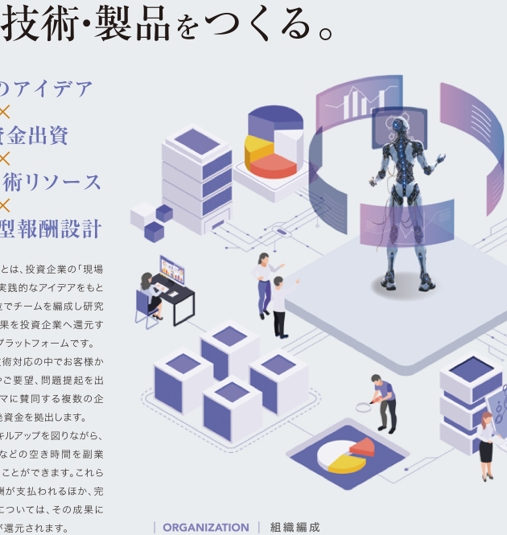
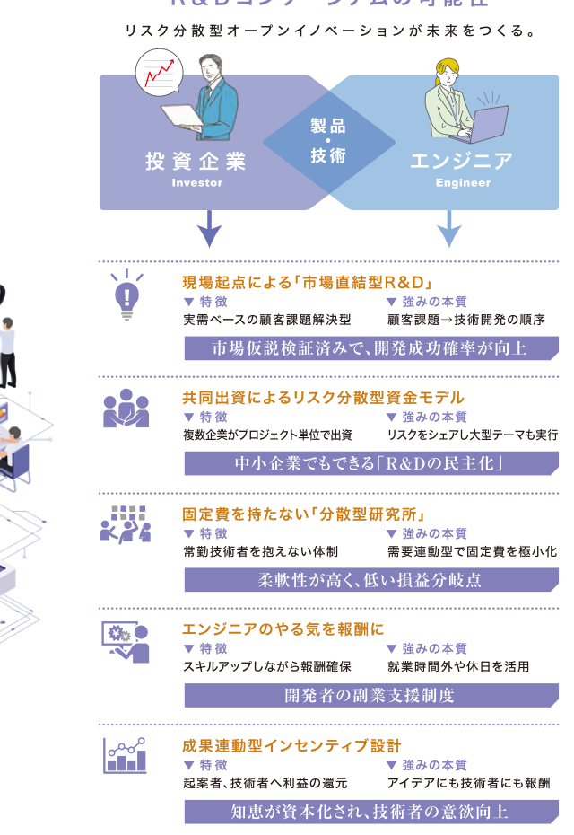

現場発のアイデア
投資企業の現場課題や顧客要望を出発点に、実需ベースのテーマを設計します。
一般社団法人テクノサプライ ｜ 循環型 技術創出プラットフォーム
つくるのは、未来。R&D CONSORTIUM
企業・人材・技術をつなぎ、オープンイノベーションを創造する基本コンセプト
企業・人材・技術をつなぎ、革新的なR&Dエコシステムで、可能性を無限に広げ、技術・製品をつくる。
現場発のアイデア×共同資金出資×分散型技術リソース×成果還元型報酬設計
投資企業の現場課題や顧客要望を出発点に、実需ベースのテーマを設計します。
複数企業がプロジェクト単位で資金を拠出し、開発リスクを分散します。
投資企業のエンジニア、退職技術者、外部専門家が最適なチームを構成します。
完成した技術・製品が事業化された際、貢献度に応じて利益を還元します。
循環型技術創出
R&D コンソーシアムは、投資企業の「現場課題」から生まれた実践的なアイデアをもとに、プロジェクト単位でチームを編成し研究開発を行い、その成果を投資企業へ還元する循環型技術創出プラットフォームです。
開発成果は製品化やOEM供給などさまざまな形で事業化され、投資企業にとってはローリスクで活用できる「セカンドラボ」としての機能も期待されています。

つくるのは、未来。
企業・人材・技術をつなぎ、可能性を無限に広げる、循環型 技術創出プラットフォーム。
事業の強み
リスク分散型オープンイノベーションが、未来をつくる。
実需ベースの顧客課題解決型。顧客課題から技術開発へ進むため、開発成功確率を高めます。
複数企業がプロジェクト単位で出資し、リスクをシェアしながら大型テーマにも挑戦できます。
常勤技術者を抱えない需要連動型の体制により、柔軟性が高く低い損益分岐点を実現します。
エンジニアは就業時間外や休日を活用し、スキルアップしながら報酬を得られます。
起案者や技術者へ利益を還元し、知恵が資本化される仕組みをつくります。

革新的な技術創出インフラの構築へ。
エンジニア向け募集要項
投資企業から寄せられた実需ベースの「現場課題」を解決するため、技術および製品の研究開発業務に参画します。
応募フォームへ本業をお持ちのエンジニアや定年退職された技術者も歓迎。就業時間外や休日などの空き時間を有効活用できます。
開発期間中は時給換算で給与を支払い、完成した技術・製品が事業化された際は貢献度に応じて利益の一部を還元します。
投資企業向け
複数企業と共同で研究開発資金を拠出することで、リスクを抑えながら技術開発を進めることができます。開発成果は製品化、OEM供給、共同事業化などへ展開できます。
よくあるご質問
業種規定はありません。異業種が参画することで、業界の常識を覆すイノベーションも生まれます。
賛同企業、エンジニア、産学連携や外部専門家も交えて、テーマに最適なチームを構成します。
ロイヤリティ等の計算式を事前に開示し、ブラックボックス化を防ぎます。
本業をお持ちの方も参加可能です。ただし、所属企業の副業規定に抵触しないことが条件です。
はい。時給換算で給与をお支払いします。時給は能力に応じて変動する場合があります。
開発期間中の時給以外に、貢献度に応じた利益分配で報酬が支払われる仕組みです。
法人情報
地域社会貢献活動、障害者支援、近隣小学校への寄付など、技術開発にとどまらない社会との接点も大切にしています。
エンジニアとして参加したい方、投資企業として相談したい方は、目的に合わせてお問い合わせください。